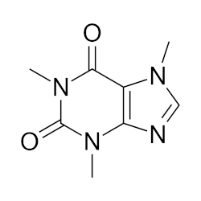
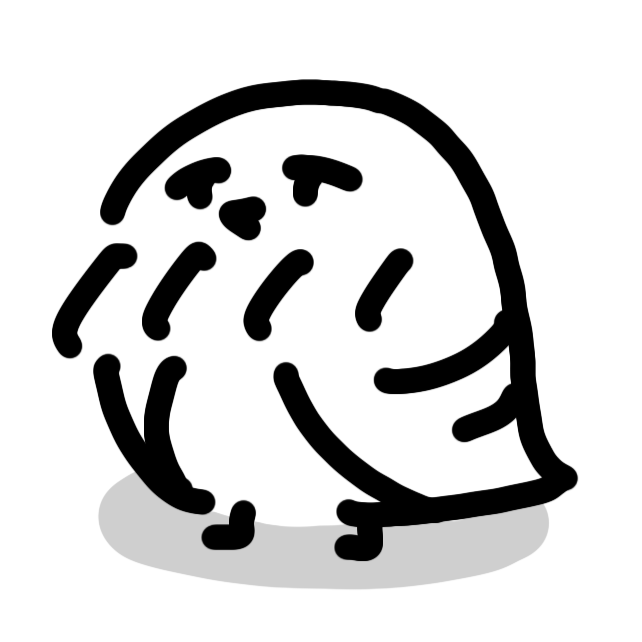

NEWS
Caffeina&Peristeronica official site
CaffeinaとPeristeronica、二人のボカロPの活動と作品をまとめて見られるホームページです。
BIOGRAPHY
Caffeina / Peristeronica
各アーティストのプロフィール、ディスコグラフィー、最新楽曲への導線をここから更新できます。
Caffeina
DISCOGRAPHY
Caffeina
PROFILE
Peristeronica
DISCOGRAPHY
Peristeronica